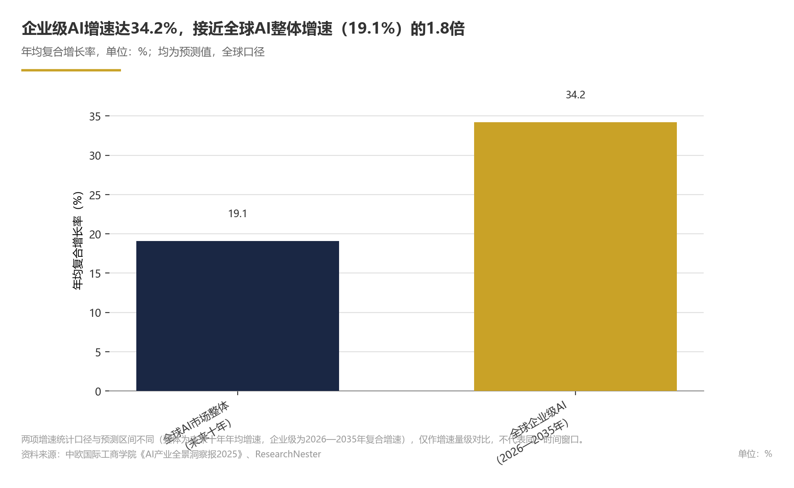
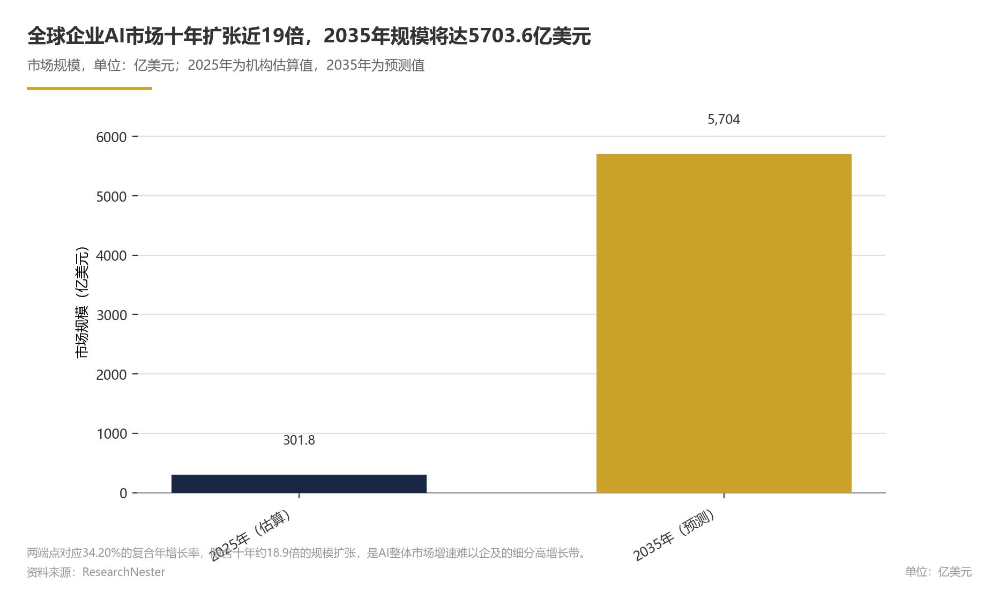
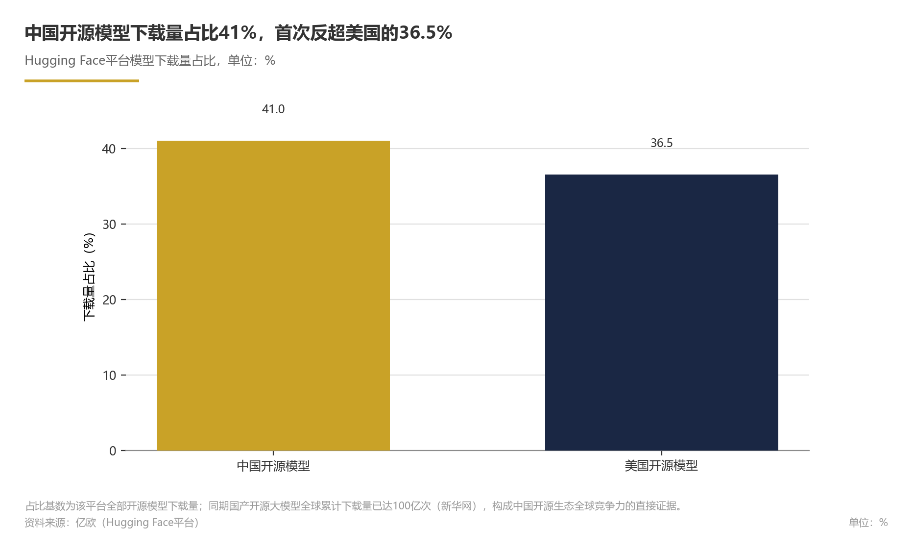

关键发现
- 全球AI产业高速成长，大模型分化为AGI探索与应用落地，竞争重心转向系统能力，未来一至两年进入“系统竞赛”阶段。智能体AI是2026年关键趋势，企业级场景成为价值核心；中美双核主导、全产业链竞逐，中国在开源生态与产业规模上形成关键位势，政策监管进入战略引领与规则构建并重阶段。
- 全球AI市场规模未来十年年均增速约19.1%（来源：全球产业章节）
- 2026年第一季度全球AI融资规模达3000亿美元（来源：全球产业章节）
- 全球企业AI细分赛道2026—2035年复合增速预计34.20%（来源：产业链章节）
- 中国AI核心产业规模截至2025年底达1.2万亿元，同比增速近30%（来源：中国产业章节）
- 国产开源大模型全球累计下载量突破100亿次，Hugging Face平台全球下载量占比41%（来源：开源生态/竞争格局章节）
- 主要不确定性集中在中国AI人才缺口（500万人）、监管细则透明度不足、算力芯片国产化率缺乏统一官方统计口径，以及智能算力规模数据仍以定性描述为主。技术成熟度处于“可行但未完全可信”窗口期，智能体商业化与企业级采购的落地节奏需持续观察。上述增速与融资数据基于现有增长预期，若技术成熟度或监管落地不及预期，实际节奏可能变化。
| Metric | Value | Unit |
|---|---|---|
| 全球AI核心产业市场规模（强人工智能口径） | 3420 | 亿美元 |
| 全球AI市场规模年均增速 | 19.1 | % |
| 全球企业AI市场规模 | 301.8 | 亿美元 |
| 全球企业AI市场规模预测 | 5703.6 | 亿美元 |
| 全球企业AI市场复合年增长率 | 34.20 | % |
| 中国AI核心产业规模 | 1.2 | 万亿元 |
| 中国AI核心产业同比增速 | 近30 | % |
| 中国AI企业数量 | 超过6000 | 家 |
| 2026年上半年中国AI相关行业增速 | 30以上 | % |
| 全球AI融资规模 | 3000 | 亿美元 |
| 中国开源模型全球下载量占比 | 41 | % |
| 美国开源模型全球下载量占比 | 36.5 | % |
| 中国AI行业人才缺口 | 500 | 万人 |
| 全球AI核心产业市场规模 | 3420 | 亿美元 |
| 中国AI核心产业规模（预测） | 1.2 | 万亿元 |
| 全球AI核心产业市场规模（强人工智能口径，2025年） | 3420 | 亿美元 |
| 全球AI市场规模年均增速（未来十年） | 19.1 | % |
| 全球企业AI市场规模（2025年） | 301.8 | 亿美元 |
| 全球企业AI市场规模预测（2035年） | 5703.6 | 亿美元 |
| 全球企业AI市场复合年增长率（2026—2035年） | 34.20 | % |
| 中国AI核心产业规模（2025年底预计） | 1.2 | 万亿元 |
| 中国AI核心产业同比增速（2025年） | 近30 | % |
| 中国AI企业数量（截至2025年底） | 超过6000 | 家 |
| 全球AI融资规模（2026年Q1） | 3000 | 亿美元 |
| 中国开源模型Hugging Face下载量的全球占比 | 41 | % |
| 美国开源模型Hugging Face下载量的全球占比 | 36.5 | % |
| 国产开源大模型全球累计下载量（截至2025年底） | 100 | 亿次 |
| 中国AI行业人才缺口（当前） | 500 | 万人 |
| 大模型技术路线 | AGI探索与应用落地并行 | — |
| 企业AI市场增速 | 2026-2035年复合增速34.20% | — |
| 产业政策信号 | “深化拓展人工智能+”“打造智能经济新形态”成为ICT双引擎 | — |
| 竞争重心 | 从“模型能不能做”转向“系统能不能持续做” | — |
| 多模态终端 | AI手机、AI PC、智能穿戴设备加速落地 | — |
| 算力需求 | 训练AI模型所需算力约每6个月翻一番（2010年后） | — |
| 技术成熟度 | 行业仍处发展初期，2026年延续高速增长 | — |
| 训练AI模型算力翻番周期 | 24个月（2010年前）；6个月（2010年后） | 月 |
| 企业AI市场复合增速预测 | 34.20 | % |
| 企业AI市场年均增长率推算 | 约34 | % |
| 中国AI企业数量（截至2025年底） | 超6000 | 家 |
| 2026年Q1全球AI融资规模 | 3000 | 亿美元 |
| 2025年全球企业AI市场规模 | 301.8 | 亿美元 |
| 2035年全球企业AI市场规模预测 | 5703.6 | 亿美元 |
| 2026—2035年企业AI市场复合年增长率 | 34.20 | % |
| 中国AI企业数量 | 超6000 | 家 |
| 国家政策信号 | “深化拓展人工智能+”“打造智能经济新形态”成为ICT双引擎 | — |
| 地方政策文件 | 深圳市“人工智能+”先进制造业行动计划（2026—2027年，规划期） | — |
| 开源与算力协同 | 构建算法开源、数据共享、算力协同的公共服务能力 | — |
| 2026年上半年AI行业增速 | 30以上 | % |
| 中国AI核心产业规模（2025年预计） | 1.2 | 万亿元 |
| 中国开源模型下载量占比 | 41 | % |
| 美国开源模型下载量占比 | 36.5 | % |
| AI行业人才缺口 | 500 | 万人 |
| 国产开源大模型累计下载量 | 100亿次 | |
| 中国AI核心产业规模同比增速（2025年预计） | 近30 | % |
| 2026年上半年AI相关行业增速 | 超30 | % |
| 中国开源模型在Hugging Face平台下载量占比 | 41 | % |
| 美国开源模型在Hugging Face平台下载量占比 | 36.5 | % |
| 产业链架构 | 基础层-技术层-应用层（中国） | 无 |
| 产业联动逻辑 | 能力向下传导、价值向上回流 | 无 |
| AI芯片产品 | 多款产品发布（截至2025年底，中国） | 无 |
| 大模型发展路线 | 两条：AGI之路与应用落地（2025年，全球） | 无 |
| 国产开源大模型累计下载量 | 100亿 | 次 |
| 全球企业AI市场规模 | 301.8（2025）→5703.6（2035） | 亿美元 |
| 全球企业AI市场复合年增长率 | 34.20（2026-2035） | % |
| 全球企业AI市场规模（2035年预计） | 5703.6 | 亿美元 |
| 国产开源大模型全球累计下载量 | 100亿 | 次 |
| 全球AI治理比较工具 | 覆盖36个国家 | — |
| Stanford HAI跨国比较工具覆盖国家数 | 36 | 个 |
| 算力底座 | AI算法迭代扩容（2026年展望，全球） | 无 |
| 智能体AI | 2026年关键趋势（全球） | 无 |
| AI手机、AI PC、智能穿戴设备 | 加速落地（2026年，中国） | 无 |
| 工业智能体 | 支持研发具备环境感知、自主决策、动态适应能力的工业智能体（2026-2027年，深圳） | 无 |
| 智能算力规模 | 持续扩大（截至2025年底，中国） | 无 |
市场规模与增长
全球AI产业仍处于高速成长期。从全球口径看，未来十年全球AI市场规模年均增速预计保持在19.1%左右（预测，来源：中欧国际工商学院），企业级AI细分赛道2026—2035年复合增速达34.20%（预测，来源：ResearchNester）。
论证与分析
全球市场：增长中枢稳定在高位
IIM《全球强人工智能行业产业链价值链研究报告（2026年）》估算，2025年全球强人工智能核心产业市场规模约3420亿美元；该报告认为，行业已进入大规模商业化与核心技术突破并行阶段（推断）。中欧国际工商学院《AI产业全景洞察报2025》预计，未来十年全球AI市场规模将保持19.1%的年均增长率（预测）。在细分市场层面，ResearchNester数据显示，2025年全球企业AI市场规模为301.8亿美元，预计到2035年达5703.6亿美元（预测），2026—2035年复合年增长率为34.20%（预测），显著高于AI整体增速。
中国市场：核心产业规模破万亿元后持续加速
全球与中国市场统计口径不同，本文不将两者直接合并比较。相关终端应用场景持续拓展（观察性判断）；政策层面持续释放"深化拓展人工智能+"信号，为市场规模扩张提供支撑（推测）。
投融资与生态：资本先行，开源重塑竞争格局
资本端热度率先升温（全球口径）。亿欧发布的《2026全球AI商业落地价值洞察研究》显示，2026年第一季度全球AI融资规模即达3000亿美元。生态竞争维度采用国别对比口径，与前述全球融资口径分列：中国开源模型在Hugging Face平台下载量的全球占比达41%，高于美国的36.5%；结合新华网援引的国产开源大模型全球累计下载量突破100亿次，开源生态已成为中国AI产业规模扩张的重要支点。
数据支撑
Exhibit 1｜市场规模与增长
| 指标 | 数值 | 口径/期间 | 来源 | 认知层级 |
|---|---|---|---|---|
| 全球AI核心产业市场规模（强人工智能口径） | 3420亿美元 | 2025年，全球 | [IIM研究报告](https://www.iim.net.cn/106/view-308889-1.html) | 事实性（机构估算） |
| 全球AI市场规模年均增速 | 19.1% | 未来十年 | [中欧国际工商学院](https://repository.ceibs.edu/files/58734763/AI_-AI.pdf) | 预测 |
| 全球企业AI市场规模 | 301.8亿美元 | 2025年，全球 | [ResearchNester](https://www.researchnester.com/cn/reports/enterprise-ai-market/8096) | 事实性（机构估算） |
| 全球企业AI市场规模预测 | 5703.6亿美元 | 2035年，全球 | [ResearchNester](https://www.researchnester.com/cn/reports/enterprise-ai-market/8096) | 预测 |
| 全球企业AI市场复合年增长率 | 34.20% | 2026—2035年 | [ResearchNester](https://www.researchnester.com/cn/reports/enterprise-ai-market/8096) | 预测 |
| 中国AI核心产业规模 | 1.2万亿元 | 截至2025年底，中国 | [新华网](https://www.news.cn/20260128/3b2f11906fd74ca397fef9996c805a60/c.html) | 预测 |
| 中国AI核心产业同比增速 | 近30% | 2025年，中国 | [新华网](https://www.news.cn/20260128/3b2f11906fd74ca397fef9996c805a60/c.html) | 预测 |
| 中国AI企业数量 | 超过6000家 | 截至2025年底，中国 | [南开大学](https://cingai.nankai.edu.cn/2026/0602/c23895a597421/page.htm) | 事实性 |
| 2026年上半年中国AI相关行业增速 | 30%以上 | 2026年H1，中国 | [新华网](https://www.news.cn/tech/20260804/4e5b276d9fa648e595cdfd76ff0d3bc2/c.html)（转引国家发展改革委） | 事实性 |
| 全球AI融资规模 | 3000亿美元 | 2026年Q1，全球 | [亿欧](https://www.iyiou.com/analysis/202607191135699) | 事实性（机构估算） |
| 中国开源模型全球下载量占比 | 41% | Hugging Face平台 | [亿欧](https://www.iyiou.com/analysis/202607191135699) | 事实性 |
| 美国开源模型全球下载量占比 | 36.5% | Hugging Face平台 | [亿欧](https://www.iyiou.com/analysis/202607191135699) | 事实性 |
| 国产开源大模型全球累计下载量 | 100亿次 | 截至2025年底 | [新华网](https://www.news.cn/20260128/3b2f11906fd74ca397fef9996c805a60/c.html) | 事实性 |
| 中国AI行业人才缺口 | 500万人 | 当前 | [央视网](https://5gai.cctv.com/hyzx/h5/index.shtml) | 事实性 |
前瞻性分析
对产业链企业而言，应把AI应用与智能体场景的规模化交付作为战略优先级；对投资者而言，可沿算力基础设施、数据服务、垂直行业AI应用三条主线进行配置。
风险提示
2026年Q1全球AI融资包含若干大额交易，季度数据不宜简单年化，融资热度能否延续取决于宏观流动性与一级市场估值环境。
此外，央视网援引的统计显示，中国人工智能行业人才缺口约500万人，若行业复合型人才供给无法匹配，可能制约应用落地和市场扩张速度。上述前瞻性情景依赖于政策支持延续、算力供给改善和AI商业化兑现速度，任一假设发生逆转，实际增速可能低于预期。该领域公开数据有限。


技术演进方向
全球大模型产业已分化为“AGI探索”与“应用落地”两条路线；AI技术竞争重心正从“模型能不能做”转向“系统能不能持续做”。开源生态、算力扩容与智能体应用形成共振，大概率推动行业从生成式AI走向“自主执行与持续进化”阶段；但若模型能力提升放缓或智能体商业化不及预期，这一进程可能推迟。
论证与分析
1.大模型技术路线分化，AGI探索与应用落地并行。
据阿里云开发者社区《大模型未来趋势：2025年AI技术前沿展望》，2025年全球大模型产业已演化出两条泾渭分明的发展路线：一条是AGI之路，卷算力、卷数据，向万亿参数发展，探索全面超越人类的超级人工智能；另一条是应用/落地之路。这一分化意味着行业不再以参数规模作为唯一进阶标尺，而是同时追求能力上限与商业化效率。
IDC在2026年中国ICT市场趋势研判中也指出，“深化拓展人工智能+”与“打造智能经济新形态”正成为中国ICT市场增长的双引擎，为中国应用落地路线提供了明确的产业政策与需求支撑。
2. 竞争重心从“模型能不能做”转向“系统能不能持续做”。
2026年8月期AI行业观察报告提出，全球AI产业竞争正在从“模型能不能做”进一步转向“系统能不能持续做”，行业进入自主执行与持续进化阶段；Google Cloud《2026年AI智能体趋势报告》亦将智能体AI列为年度关键趋势。在中国产业实践层面，深圳“人工智能+”先进制造业行动计划明确提出，围绕工业场景“数字员工”需求，支持研发具备环境感知、自主决策、动态适应能力的工业智能体。从上述工业智能体的能力要求看，多模态感知正在成为智能体底层能力的一部分；AI手机、AI PC、智能穿戴设备等终端加速走进中国政企场景（新华网），为多模态交互提供了规模化落地入口。
3. 算力需求与开源生态形成双轮驱动。
浦银国际科技行业2026年展望指出，AI算法迭代扩容算力底座；南开大学《中国新一代人工智能科技产业发展报告2026》显示，国内大模型引领全球开源生态，发布了多款人工智能芯片产品，智能算力规模持续扩大。深圳行动计划进一步提出构建算法开源、数据共享、算力协同的公共服务能力，降低中小企业智能化改造门槛。从产业演进逻辑看，开源生态降低了模型获取与二次开发成本，算力扩容则为更大规模模型和更多并发应用提供支撑，二者共同影响技术扩散速度与应用密度；该判断为基于上述开源与算力事实的推断，其量化影响有待公开数据验证。
4. 行业整体仍处发展初期，技术成熟度快速爬坡。
浦银国际判断，经过近两年发展，人工智能行业仍处于发展初期阶段；展望2026年，AI行业将继续保持强劲增长，打开多产业链成长空间。结合2026年8月期AI行业观察报告关于“从生成走向闭环”的表述，部分行业观察认为，模型已能完成高质量生成任务，但面向生产环境的稳定性、可解释性与成本优化仍在爬坡；综合该观察，本章将当前技术成熟度评估为“可行但未完全可信”的窗口期（作者评估）。该领域公开标准化评测数据有限，后续需结合第三方基准测试与行业案例更新。
前瞻性分析
结合市场规模章节所述资本热度，智能体相关方案有望成为企业级采购的主要增量。以下情景推演均为推测：中性情景下，具备自主规划、多步执行与持续学习能力的“数字员工”类应用将在客服、研发、供应链管理等场景率先规模化；乐观情景下，开源生态与多模态终端协同将推动AI能力向中小企业和边缘场景快速渗透；悲观情景下，若算力供给或数据治理出现约束，行业可能阶段性回归模型层打磨。对技术厂商而言，应优先构建“模型+工具+场景”的闭环；对行业用户而言，宜从低风险流程切入智能体部署，以真实运行数据反哺模型迭代。
数据支撑
Exhibit 2｜技术演进方向
| 维度 | 关键发现 | 来源 | 认知层级 |
|---|---|---|---|
| 大模型技术路线 | 分化为AGI之路（卷算力、卷数据、万亿参数）与应用落地之路 | 阿里云开发者社区 | |
| 产业政策信号 | “深化拓展人工智能+”“打造智能经济新形态”成为ICT双引擎 | IDC | |
| 竞争重心 | 从“模型能不能做”转向“系统能不能持续做” | 2026年8月期AI行业观察报告 | |
| 智能体趋势 | 智能体AI成为2026年关键趋势，工业智能体获政策支持 | Google Cloud；深圳行动计划 | |
| 多模态终端 | AI手机、AI PC、智能穿戴设备加速落地 | 新华网 | |
| 算力需求 | AI算法迭代扩容算力底座，智能算力规模持续扩大 | 浦银国际；南开大学 | factual/inferential |
| 算力需求趋势 | 训练AI模型所需的算力：2010年深度学习革命开始前约每24个月翻一番；2010年以后加快为约每6个月翻一番 | 世界银行报告（https://documents1.worldbank.org/curated/en/099010926091546503/pdf/P505350-3d302ef2-4e71-4182-b795-9330b4f0c15a.pdf） | |
| 开源生态 | 国内大模型引领全球开源生态，智能算力规模持续扩大 | 南开大学；深圳行动计划 | factual/inferential |
| 技术成熟度 | 行业仍处发展初期，2026年延续高速增长 | 浦银国际 | |
| 企业AI市场增速 | 2026-2035年复合增速34.20%，按此推算年均增长约34%，但个别年份存在波动 | ResearchNester |
风险提示
本章涉及技术路线与成熟度判断，部分依赖行业观点及政策文件，存在前瞻性和推断成分。大模型向AGI演进的节奏、算力成本下降速度、开源生态的可持续性，以及智能体在真实生产环节的稳定性均存在不确定性；尤其多模态能力的实际成熟度与智能体部署回报，目前公开标准化评测数据有限，需结合后续第三方基准测试与行业案例动态修正。上述分析不构成投资决策依据。
竞争态势与企业份额
全球人工智能竞争格局呈现"中美双核主导、全产业链竞逐"特征。但竞争重心正从单一模型能力转向"模型+算力+数据+场景"的系统能力，竞争梯队与产品布局均在动态重构之中。
论证与分析
竞争格局：中美双核主导，竞争重心转向系统能力
全球AI产业竞争已演变为国家与地区层面的全产业链竞争。据M2觅途咨询发布的《2026全球AI全产业链竞争力洞察》，中美在能源—芯片—基础设施—模型—应用五层架构上展开全面角逐，单一维度的技术领先已不足以决定市场地位。
竞争重心的迁移进一步强化了这一态势。据2026年8月期AI行业月度观察报告，AI产业竞争正从"模型能不能做"进一步转向"系统能不能持续做"。这意味着具备算力底座、数据飞轮与行业场景整合能力的平台型企业，将较纯模型公司构建起更强的竞争壁垒。资本流向印证了这一逻辑：据亿欧数据，2026年第一季度全球AI融资规模即达3000亿美元，资金加速向具备系统化能力的头部主体汇集。
中国企业的群体性崛起是竞争格局中最重要的变量。在开源生态方面，中国已形成独特的全球竞争力：据亿欧数据，中国开源模型在Hugging Face平台下载量占比达41%，首次超过美国的36.5%；据新华网统计，国产开源大模型全球累计下载量突破100亿次。
竞争梯队：平台巨头主导、AI原生企业突围
基于竞争主体的能力结构，当前市场大致呈现三个梯队格局。
从全球市场看，华为已提出行业智能化参考架构，联合伙伴使能百模千态的AI大模型（据华为官方资料）；NVIDIA以算力底座为基础，基于数百位行业专业人士的反馈形成零售与消费品行业AI现状与趋势调研，向垂直行业输出解决方案（据NVIDIA调研报告）。
在中国市场，以华为、阿里巴巴等为代表的云与科技巨头，正依托云生态与行业客户资源构建全栈竞争壁垒。
第二梯队为AI原生企业与模型创业公司，聚焦模型算法创新与细分场景突破，依托开源生态或行业know-how参与竞争，是行业活力与创新的主要来源。
第三梯队为行业应用与智能硬件企业。随着AI手机、AI PC、智能穿戴设备等终端加速落地（据新华网），终端侧企业与行业解决方案商逐渐成为应用层竞争的重要参与者。
这一梯队结构并非静态。从中国市场看，据东方财富证券对Wind软件指数的复盘，AI应用行业基本面已于2025年下半年确立拐点，利润弹性显著释放；2026年AI应用正迎来宏观产业逻辑与微观业绩拐点的双重共振——部分第二、第三梯队企业有望借助应用落地实现位次跃升。
产品布局：模型、智能体与终端三线并进
在产品维度，头部企业的布局呈现三条主线并行的态势。
其一是基础模型迭代。大模型产业已分化为AGI探索与应用落地两条发展路线（据阿里云开发者社区），头部企业分别在万亿参数通用模型与行业轻量化模型两条赛道上展开差异化竞争。
其二是智能体（Agent）产品化。智能体AI已确定为2026年企业转型的关键趋势（据Google Cloud趋势报告）。中国政策端亦在加速引导，深圳市"人工智能+"先进制造业行动计划明确支持研发具备环境感知、自主决策、动态适应能力的工业智能体，聚焦研发设计、生产制造、供应链管理等工业场景。智能体正从概念验证走向工业场景"数字员工"的规模化部署，成为企业级AI产品竞争的主战场。
其三是终端与多模态融合。AI手机、AI PC、智能穿戴设备等终端加速走进政企场景与千家万户（据新华网），多模态能力从云端向终端下沉，带动端侧AI芯片、操作系统与应用生态的连锁竞争。
研发投入：从算力军备到全要素竞争
全球AI行业的研发投入竞争已超越单一算力维度。浦银国际2026年科技行业展望指出，AI算法迭代持续扩容算力底座；智能算力规模持续扩大，多款AI芯片产品相继发布（据南开大学）——底层硬件投入仍在加速。与此同时，具体到中国，人才成为最稀缺的研发要素：据央视网统计，当前中国人工智能行业人才缺口高达500万人，直接制约企业研发能力的上限。
未来市场空间的确定性进一步强化了企业加大研发投入的激励。据ResearchNester预测，2025年全球企业AI市场规模为301.8亿美元，预计至2035年达到5703.6亿美元，2026—2035年复合年增长率达34.20%。在这一增长预期下，企业研发投入竞争的本质是对未来市场份额的提前卡位。
前瞻性分析
基于当前竞争动态，我们预计未来一至两年全球AI竞争将进入"系统竞赛"阶段：竞争单元从单一模型升级为"模型+算力+数据+场景"的系统组合，资本与人才将进一步向具备系统化能力的头部企业集中。具体来看，中国在开源生态领域的领先地位有望延续，开源模型下载量占比预计仍将保持全球领先；美国企业将继续主导高端算力与前沿基础模型研发；而智能体技术的商业化落地将使中美在应用层的竞争显著加剧。
对市场参与者的决策含义有三：其一，竞争策略应转向系统能力建设优先，构建与行业客户深度绑定的场景壁垒，而非追求单一模型指标领先；其二，智能体技术栈应作为未来两年的战略性布局重点——据Google Cloud预判，智能体AI将在2026年及未来驱动企业业务转型；其三，在中国AI人才缺口达500万的背景下，企业应将"算法+工程+行业"复合型团队建设前置为竞争战略的核心环节，否则将在系统竞赛阶段面临执行力瓶颈。
上述判断的假设前提包括：无重大地缘政治与技术封锁变故；开源与闭源路线长期并存并形成差异化分工；主要经济体AI监管框架保持连续性。
数据支撑
本章关键数据如下：
Exhibit 3｜竞争态势与企业份额
| 指标 | 数值 | 来源 |
|---|---|---|
| 中国AI企业数量（截至2025年底） | 超6000家 | 南开大学 |
| 中国开源模型全球下载量占比 | 41% | 亿欧 |
| 美国开源模型全球下载量占比 | 36.5% | 亿欧 |
| 国产开源大模型全球累计下载量 | 100亿次 | 新华网 |
| 2026年Q1全球AI融资规模 | 3000亿美元 | 亿欧 |
| 2025年全球企业AI市场规模 | 301.8亿美元 | ResearchNester |
| 2035年全球企业AI市场规模预测 | 5703.6亿美元 | ResearchNester |
| 2026—2035年企业AI市场复合年增长率 | 34.20% | ResearchNester |
| 中国AI行业人才缺口 | 500万人 | 央视网 |
风险提示
- 全球AI行业仍处发展初期（据浦银国际），竞争格局远未固化，本章竞争梯队划分基于能力结构判断，存在梯队间动态转化的可能。- 企业级市场份额、主要企业研发投入等数据在公开渠道高度碎片化，缺乏统一的结构化统计口径，本章以定性分析为主，未给出量化的企业份额排序。
- 全球AI融资规模、开源模型下载占比等指标时效性强，受统计口径与平台政策调整影响可能出现波动。- 二级市场AI应用板块的业绩拐点判断反映部分上市软件企业表现，与一级市场AI创企实际竞争态势存在差异，引用时需注意口径边界。该领域公开数据有限。
政策与监管
2026年，人工智能政策与监管进入“战略引领与规则构建并重”的新阶段（推断）。中国以“深化拓展人工智能+”与“打造智能经济新形态”为顶层主线（IDC），中央政策信号牵引与地方精准施策（以深圳行动计划为代表）形成双层推进格局（推断）；全球层面，AI治理体系正加速从原则宣示走向工具化比较（推断），Stanford HAI发布的跨国比较工具是这一趋势的体现。
论证与分析
1. 国家政策主线：从技术攻坚走向智能经济形态塑造
2026年全国两会释放明确信号：“深化拓展人工智能+”与“打造智能经济新形态”正成为ICT市场增长的双引擎（IDC）。这一顶层表述表明，政策重心正从早期的基础技术研发扶持转向推动AI与实体经济全场景的深度融合（推断）。政策主线的确立，为AI企业在行业场景中的布局提供了清晰的制度预期（推断），“人工智能+”的内涵正从技术工具升级为经济形态，AI产业化进程从单点突破转向系统重构（推断）。
2. 地方政策执行：深圳行动计划提供生态化政策范式
地方层面，深圳市“人工智能+”先进制造业行动计划（2026—2027年，规划期）是观察地方政策创新的代表性样本（推断）。该计划明确构建算法开源、数据共享、算力协同的公共服务能力，整合技术资源与行业数据（深圳市行动计划）。这一政策设计体现出“从给项目到建生态”的转向（推断）：政府角色从直接资源配置者转变为公共平台搭建者。
在场景落地层面，深圳计划支持研发具备环境感知、自主决策、动态适应能力的工业智能体（深圳市行动计划）。这与智能体成为企业级AI竞争主战场的产业趋势形成政策呼应，显示出地方政策工具与前沿技术路线的高度协同（推断）。
3. 监管框架与数据治理：全球规则体系加速构建
全球AI治理正从定性讨论走向工具化、可比较阶段（推断）。斯坦福大学以人为本人工智能研究院（Stanford HAI）推出的跨国比较工具可对36个国家的人工智能生态系统进行横向比较（Stanford HAI）。这反映了国际社会对AI治理的核心需求——从抽象原则转向可量化、可监测的制度设计（推断）。
在中国，监管制度仍在建设初期（推断）；AI手机、AI PC、智能穿戴设备等终端加速落地（新华网）。当AI从实验室走向大规模应用，数据安全法规、算法透明与隐私保护成为监管框架的核心支柱（推断）；终端应用普及程度的提升，客观要求数据治理规则与产业发展节奏相匹配（推断）。
4. 政策与产业数据：多维数据呈现方向性一致
政策引导与产业发展之间的方向性关联在公开数据中得到多维度呈现（推断）：
- 人才约束：AI行业人才缺口达500万人（央视网），提示政策组合需同步加大人才培养与供给力度（推断）。
- 开源生态：国产开源大模型全球累计下载量达100亿次（新华网）。
前瞻性判断：未来一至两年的政策演化方向
基于上述政策信号与产业数据，未来一至两年AI政策与监管大概率沿以下三个方向演进，但存在不确定性：
第一，地方政策密集跟进期。“人工智能+”行动预计将有更多城市出台实施细则，政策竞争焦点从算力补贴转向场景开放、数据共享与公共服务平台建设——深圳计划中“算法开源、数据共享、算力协同”的政策框架有望成为地方标配。
第二，监管规则细化期。全球AI治理工具化趋势（Stanford HAI发布的36国比较工具）叠加中国庞大产业体量的治理需求，数据安全与算法治理的制度颗粒度将显著细化（推断）。假设宏观经济与产业政策无重大方向性调整，未来两年中国AI监管框架将从框架性立法走向操作性细则。
第三，资本与政策共振期。全球层面，2026年Q1全球AI融资已达3000亿美元（亿欧），显示全球资本处于高位；国内层面，叠加中国开源生态的全球竞争力（推断），AI产业资本供给预计保持高位。对利益相关方而言，企业应重点关注政策驱动的场景准入窗口与数据合规成本变化，在应用落地节奏与技术合规能力之间提前建立平衡。
替代情景：若地方政策执行不及预期，或国际治理碎片化加剧，上述演进节奏可能放缓，尤其是地方细则落地速度与监管颗粒度将面临更大不确定性。
数据支撑
Exhibit 4｜政策与监管
| 指标 | 数值/内容 | 来源 |
|---|---|---|
| 国家政策信号 | “深化拓展人工智能+”“打造智能经济新形态”成为ICT双引擎 | IDC |
| 地方政策文件 | 深圳市“人工智能+”先进制造业行动计划（2026—2027年，规划期） | 深圳市人民政府 |
| 开源与算力协同 | 构建算法开源、数据共享、算力协同的公共服务能力 | 深圳市行动计划 |
| 工业智能体 | 支持研发环境感知、自主决策、动态适应能力的工业智能体 | 深圳市行动计划 |
| 2026年上半年AI行业增速 | 30%以上 | 国家发展改革委（新华网） |
| 中国AI核心产业规模（2025年预计） | 1.2万亿元 | 新华网 |
| 中国AI企业数量 | 超过6000家 | 南开大学 |
| 国产开源大模型全球累计下载量 | 100亿次 | 新华网 |
| 中国开源模型下载量占比 | 41%（Hugging Face平台） | 亿欧 |
| 美国开源模型下载量占比 | 36.5%（Hugging Face平台） | 亿欧 |
| 2026年Q1全球AI融资规模 | 3000亿美元 | 亿欧 |
| AI行业人才缺口 | 500万人 | 央视网 |
| 全球AI治理比较工具 | 覆盖36个国家 | Stanford HAI |
风险提示
本章政策与监管分析存在以下不确定性：
- 监管细则透明度：国家层面的具体监管细则（数据安全法规的具体条款、算法备案要求、跨境数据流动规则等）在公开渠道可核验的信息有限，本章侧重于政策信号与产业效应的关联分析，未做逐项制度比对。
- 地方政策代表性：政策样本以深圳行动计划为主，其“先进制造业”定位与城市资源禀赋具有一定特殊性，不能完全代表全国各地区的政策取向与执行力度；其他城市的具体政策细节公开数据有限。
- 全球治理有效性：全球AI治理仍处早期阶段（推断），此类跨国比较工具的跨国产出科学性与政策影响力有待检验；不同经济体的治理理念差异可能制约国际协作进程。
- 人才供给约束：人才缺口500万（央视网）构成政策目标实现的关键瓶颈。若人才供给无法匹配产业扩张速度，政策驱动的增长预期可能部分延后。

产业链结构
总体来看，中国AI产业链已形成"基础层—技术层—应用层"三层架构，能力向下传导、价值/需求向上回流，并在下游应用需求的拉动下反向牵引上游基础设施投资。产业链在中游开源生态环节具备全球竞争力，下游应用加速落地，上游算力芯片环节自主化持续推进，但国产化率仍缺乏统一的官方统计口径。
论证与分析
产业链三层架构确立，能力与价值双向传导
据兴业证券研报分析，人工智能主要覆盖三大核心环节：基础层主要包括数据采集、大数据、云计算和智能芯片等产业；技术层主要包括自然语言处理、计算机视觉等算法能力；应用层将技术能力转化为面向垂直行业的解决方案。进一步看，这三层架构并非孤立存在，而是形成了"能力向下传导、价值向上回流"的强联动逻辑——底层算力与数据资源支撑上层模型训练与场景落地，上层应用产生的需求又反向牵引底层基础设施扩容。
上游：算力底座持续扩容，芯片自主化进入加速验证期
从上游供给看，据浦银国际研究，2026年全球AI算法迭代持续扩容算力底座。据浦银国际研究，AI算法迭代与生态繁荣正共同重塑AI产业的增长边界，算力基础设施是产业链扩张的首要受益环节。中国方面，据南开大学《中国新一代人工智能科技产业发展报告2026》口径，截至2025年底，中国智能算力规模持续扩大，并已发布多款人工智能芯片产品，表明上游环节正从单点技术突破走向体系化产品布局。需要指出的是，算力芯片环节的关键供应商市场份额公开数据有限；自主化持续推进，但国产化率尚未形成统一的官方统计口径。
中游：大模型双路线演进，竞争重心从模型转向系统
中游环节呈现"双路线+系统化"的演进特征。一方面，大模型产业已分化为两条明确的发展路线：AGI之路侧重算力与数据规模扩张，向万亿参数方向探索；应用落地之路侧重工程化效率与行业场景适配。另一方面，产业竞争重心正从"模型能不能做"转向"系统能不能持续做"——模型能力仅是竞争起点，持续运营、工具链、数据闭环等系统能力成为新的竞争重心。该判断基于大模型双路线演进的当前态势，属定性分析。在开源生态维度，国产开源大模型全球累计下载量已突破100亿次，开源成为中国AI产业链中游的差异化优势环节。与之同步，据Google Cloud判断，智能体AI成为2026年全球关键趋势，预计中游供给形态将从单一模型向"模型+智能体"的复合能力演进。
下游：消费终端与企业级场景双轮驱动，企业市场成为价值增长引擎
下游应用呈现消费端与企业端同步渗透的格局。据新华网报道，消费端，2026年在中国，AI手机、AI PC、智能穿戴设备等终端在多模态方向加速落地。企业端，据[深圳市“人工智能+”先进制造业行动计划（2026-2027年）](http://gxj.sz.gov.cn/gkmlpt/content/12/12645/post_12645602.html)口径，深圳市已出台政策支持研发具备环境感知、自主决策、动态适应能力的工业智能体。市场规模方面，从全球维度看，据ResearchNester数据，2025年全球企业AI市场规模为301.8亿美元，预计2035年达5703.6亿美元，2026—2035年复合年增长率为34.20%。按此增速推算，2026年全球企业AI市场规模将继续保持高速增长。以此全球趋势为参照，企业级场景正在成为全球产业链价值增长的核心引擎。
基于当前趋势综合判断，预计未来一至两年，全球产业链价值重心将从模型层进一步向应用场景与系统能力迁移。以全球企业AI市场为参照，若34.20%的复合增速持续兑现，预计2027年全球企业AI市场规模将延续高增长，企业级场景的持续放量将直接带动中游智能体平台与下游行业解决方案两个环节的投入强度。对产业链参与者而言，上游环节应把握算力芯片国产化的验证窗口，加快产品在真实场景中的规模化应用；中游企业需从单一模型能力竞争转向"模型+系统+智能体"的综合能力建设；下游决策者应优先卡位企业级与工业自动化场景，这两类场景预计贡献未来两年主要的增量市场空间。
数据支撑
Exhibit 5｜产业链结构
| 产业链环节 | 关键指标 | 数据/口径 | 来源 |
|---|---|---|---|
| 全链条 | 产业链架构 | 基础层-技术层-应用层（中国） | 兴业证券 |
| 全链条 | 产业联动逻辑 | 能力向下传导、价值向上回流 | CEIETN |
| 上游/算力芯片 | 智能算力规模 | 持续扩大（截至2025年底，中国） | 南开大学 |
| 上游/算力芯片 | AI芯片产品 | 多款产品发布（截至2025年底，中国） | 南开大学 |
| 上游/基础设施 | 算力底座 | AI算法迭代扩容（2026年展望，全球） | 浦银国际 |
| 中游/算法模型 | 大模型发展路线 | 两条：AGI之路与应用落地（2025年，全球） | 阿里云开发者社区 |
| 中游/开源生态 | 国产开源大模型累计下载量 | 100亿次（中国） | 新华网 |
| 中游/智能体 | 智能体AI | 2026年关键趋势（全球） | Google Cloud |
| 下游/终端应用 | AI手机、AI PC、智能穿戴设备 | 加速落地（2026年，中国） | 新华网 |
| 下游/工业场景 | 工业智能体 | 支持研发具备环境感知、自主决策、动态适应能力的工业智能体（2026-2027年，深圳） | [深圳市“人工智能+”先进制造业行动计划（2026-2027年）](http://gxj.sz.gov.cn/gkmlpt/content/12/12645/post_12645602.html) |
| 下游/企业市场 | 全球企业AI市场规模 | 301.8亿美元（2025）→5703.6亿美元（2035） | ResearchNester |
| 下游/企业市场 | 全球企业AI市场复合年增长率 | 34.20%（2026-2035） | ResearchNester |
风险提示
第一，国产化率目前缺乏统一的官方统计口径，本文以国产开源模型下载量、国产AI芯片产品发布等公开信息作为间接观察，可能无法全面反映上游环节的真实自主化水平。第二，上游算力芯片环节的关键供应商结构与市场份额公开数据有限，相关判断以定性分析为主，待权威统计发布后需及时修正。第三，企业AI市场预测数据来自ResearchNester单一机构，其统计口径与全球AI核心产业市场等其他规模测算存在交叉与差异，跨报告对比时需注意口径一致性。第四，产业链环节划分在不同机构间存在差异（如三层架构与五层架构并存），本文采用主流的"基础—技术—应用"三层口径，后续可结合更细粒度的架构研究进行补充。